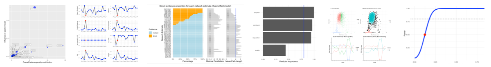

Example plots from dmetar
The dmetar package serves as the companion R package for the guide Doing Meta-Analysis in R by Mathias Harrer, Pim Cuijpers, Toshi Furukawa and David Daniel Ebert. The package contains utility functions to facilitate the conduction of meta-analyses using the meta, metafor, netmeta and gemtc packages.
Installation
The latest development version can be installed from GitHub using pak.
install.packages("pak")
pak::pak("MathiasHarrer/dmetar")Learning More
The dmetar package was developed for the online guide Doing Meta-Analysis in R by Mathias Harrer, Pim Cuijpers, Toshi Furukawa and David Daniel Ebert. This guide gives an introduction on how meta-analyses can be conducted in R, with a focus on biomedical and psychological research.
The guide was designed to serve as a low-threshold entry point for researchers who want to learn about meta-analysis using R. No prior knowledge of R or RStudio is required. The guide provides a more detailed overview of dmetar functions and how they can be used in combination with go-to meta-analysis packages such as metafor or meta.
Questions & Bugs
For questions concerning the dmetar package, or to report bugs, please contact Mathias (mathias.harrer@tum.de).